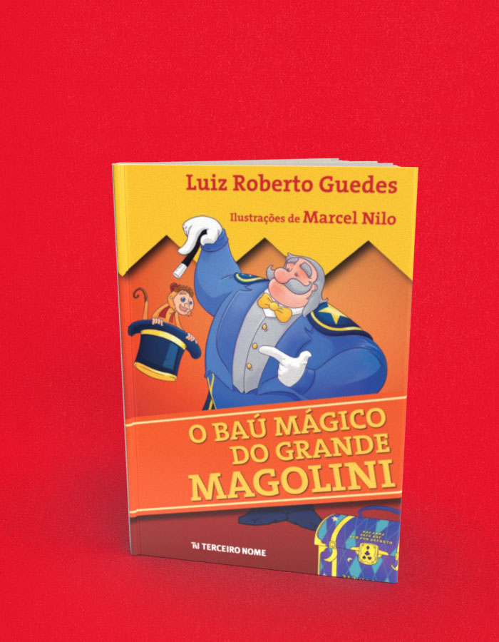

O baú mágico do Grande Magolini
A compra acontece no site da livraria, em uma nova aba. Consulte lá os preços e a disponibilidade. Procure pelo título ou ISBN deste livro.
- Autoria / créditos
- Luiz Roberto Guedes
- ISBN
- 9788578161439
- Páginas
- 55
- Formato
- 14 cm x 19,5 cm
- Acabamento
- brochura
Sobre o livro
Que fim levou o baú do Grande Magolini, o mágico mais famoso do mundo? Seu baú sumiu, que desastre! Que perigo para o mundo! Como será que o mágico e seu fiel escudeiro, o pequeno Micolino, vão encontrar o baú desaparecido, com todos os equipamentos supersecretos para suas grandes mágicas? Agora, no final de toda apresentação, o Grande Magolini pede ao seu público: "Se alguém encontrar o meu baú perdido, não abra, não olhe, não fuce, não toque em nada! Chame logo a única pessoa neste mundo que pode controlar os poderes terríveis desse baú: eu!". E agora, o que ele vai fazer?
Poeta, escritor, tradutor e letrista, o paulistano Luiz Roberto Guedes escreve para jovens e adultos. É autor de vários livros juvenis. Guedes organizou a antologia poética paulistana Paixão Por São Paulo. Letrista sob o pseudônimo de Paulo Flexa, tem parcerias com os compositores Luiz Guedes (seu primo), Thomas Roth, Beto Guedes (outro primo), Madan, César Rossini, Ronaldo Rayol, Ivaldo Moreira, Luís Rodolfo Dantas e Élio Camalle. No mais, o autor confessa que não sabe que fim levou o danado desse baú mágico do Grande Magolini.
Nascido em São Paulo, em 1989, Marcel Nilo é ilustrador, modelador e artista 3D. Cria arte para campanhas publicitárias, produziu a versão 3D do mascote da Copa do Mundo de 2014, trabalhou na pré-produção de um longa de animação e desenvolve cenários e personagens de games para smartphones e tablets. Mas antes de ingressar no mundo digital, trabalhou como garçom, lavou cachorros em pet shop, foi empacotador em supermercado, cuidou de brinquedos em buffet infantil, produziu cadernos personalizados de animê e vendeu algodão doce, cachorro quente, latinha de alumínio e cobre. E se não bastasse tudo isso, pratica Taekwondo desde os 13 anos. Além de dar vida ao Grande Magolini e ao pequeno Micolino, ilustrou e escreveu o livro infantojuvenil Aquele garoto e os segredos da Floresta Mágica.
← Voltar ao catálogo